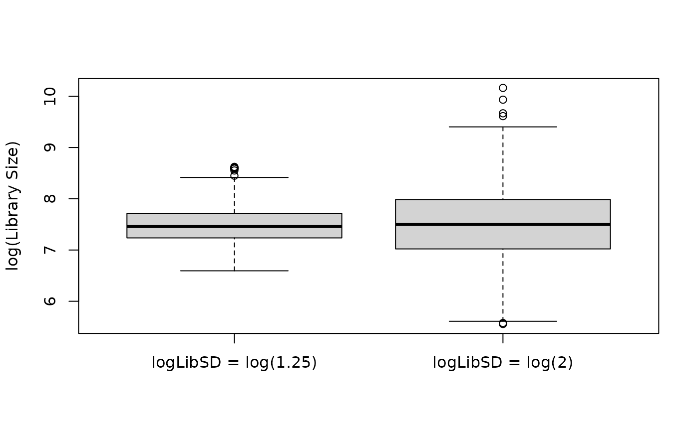
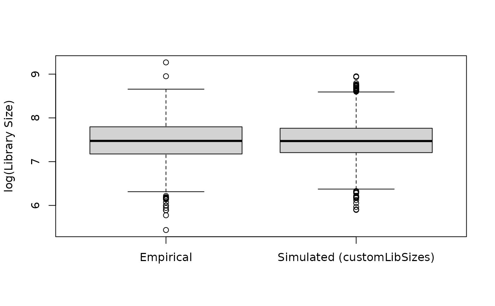
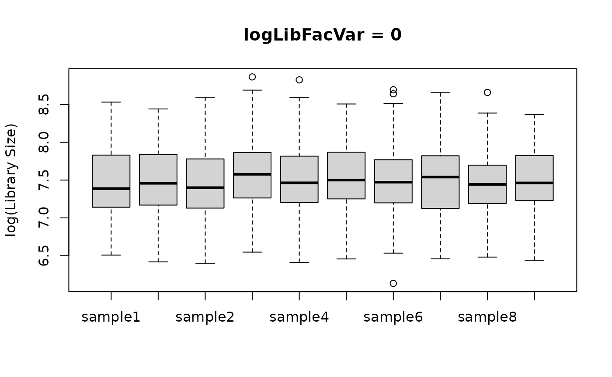
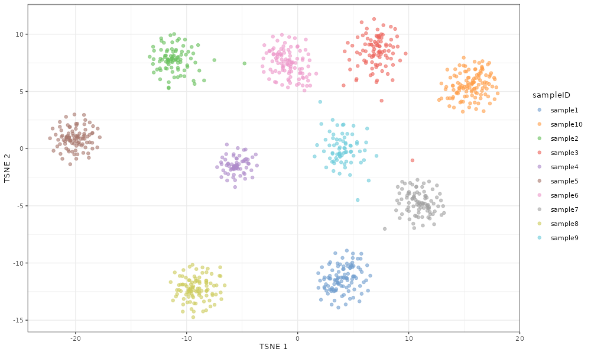
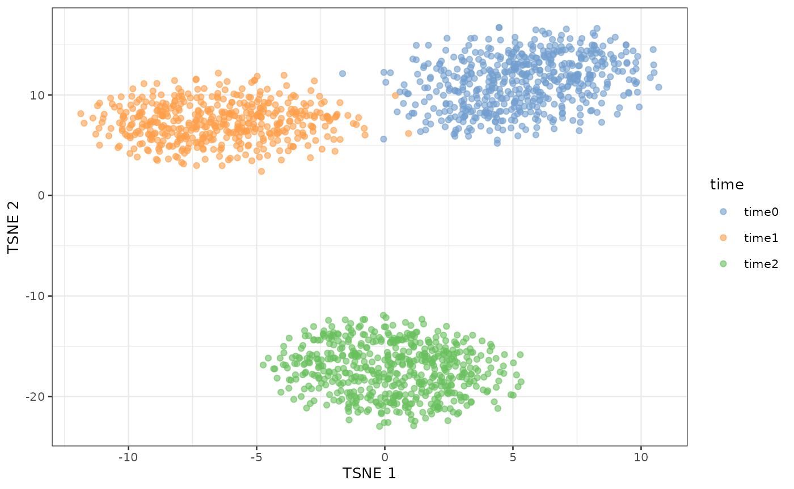

Introduction
rescueSim is an R package for simulating single-cell
RNA-sequencing (scRNA-seq) data from repeated measures designs, such as
longitudinal studies. One benefit of these types of studies is they
allow researchers to investigate changes in gene expression over time
for a specific cell type. Realistic simulated data data can be used to
evaluate analysis methods and assess power under a variety of
settings.
The rescueSim package uses a gamma-poisson framework to
simulate data from individual cell-types while mimicking important
attributes of empirical data such as between-sample variability
(i.e. data from cells from the same sample are correlated) and
between-subject variability (i.e. data from samples from the same
subject are correlated).
In this vignette, we outline:
- An overview of the simulation method
- The basic workflow for simulating data
- How to generate and update an object for storing simulation parameters
- How to estimate simulation parameters from a data set
- How to simulate data using simulation parameters
- The effect of adjusting some of the simulation parameters on the simulated data
Installation
rescueSim is available on github at: https://github.com/ewynn610/rescueSim.
It can be installed using:
if (!requireNamespace("devtools", quietly = TRUE)) {
install.packages("devtools")
}
devtools::install_github("https://github.com/ewynn610/rescueSim")Simulation Overview
rescueSim simulates a data set for a single
cell type with gene expression counts for cells from several samples,
with multiple samples coming from individual subjects. If a user wants
data from several cell types, this process can be repeated to generate
data for each cell type of interest.
The simulation process can be broken up into three steps (Figure 1):
- Simulate sample-specific mean expression values for each gene, with values for samples from the same subject having an extra level of correlation.
- Draw cell-level “true” expression values for each gene using the sample-specific values.
- Simulate final count values for each cell with added variability representing technical effects.

As seen in the left hand side of Figure 1, the simulation framework relies on a series of parameters. These can be estimated from a data set provided by the user or supplied manually by the user. Alternatively, predefined parameter values which were estimated from a longitudinal scRNA-Seq data set of bronchoalveolar lavage samples from healthy adult subjects are included in the package. Users can use a combination of predefined or supplied parameters and parameters estimated from empirical data. This is particularly useful in situations where multi-sample/multi-time point data is not available in which case some, but not all, simulation parameters can be estimated from the empirical data.
Workflow Basics
The simulation workflow includes two broad steps:
- Generating simulation parameters (using
RescueSimParams()andestimateRescueSimParams()) - Using the simulation parameters to simulate the data (using
simulateRescueData())
The end result is a singleCellExperiment object with
simulated data for an individual cell-type. If you want data
from several cell types, you can re-run this process, preferably using
simulation parameters estimated from data from the cell type(s) of
interest.
Throughout the following example we will use gene expression data for recruited airspace macrophage cells from bronchoalveolar lavage samples samples collected from healthy adults. The data has been subset to contain gene expression for 1940 genes from 976 cells. Data was collected from five subjects at two time points per subject.
## Load necessary packages
library(rescueSim)
library(SingleCellExperiment)
## set seed for reproducibility
set.seed(24)
## Load data
data("RecAM_sce")
## Data is held in singleCellExperiment object
class(RecAM_sce)
#> [1] "SingleCellExperiment"
#> attr(,"package")
#> [1] "SingleCellExperiment"
## Data dimensions
dim(RecAM_sce)
#> [1] 1940 976
## Cell level metadata
head(colData(RecAM_sce))
#> DataFrame with 6 rows and 3 columns
#> sampleID subjectID time
#> <character> <character> <character>
#> ACTCCCAAGTCATTGC_2 sample1 subject1 time0
#> TATTGCTTCCTAGCCT_2 sample1 subject1 time0
#> ACGGGTCTCGTCCTTG_2 sample1 subject1 time0
#> AACGAAACATGGGCAA_2 sample1 subject1 time0
#> GAGACCCCACGGTGTC_2 sample1 subject1 time0
#> GGGAAGTTCTCAACGA_2 sample1 subject1 time0
## Five subjects
unique(RecAM_sce$subjectID)
#> [1] "subject1" "subject2" "subject3" "subject4" "subject5"
## Ten samples (two per subject)
unique(RecAM_sce$sampleID)
#> [1] "sample1" "sample2" "sample3" "sample4" "sample5" "sample6"
#> [7] "sample7" "sample8" "sample9" "sample10"
## Two different time points
unique(RecAM_sce$time)
#> [1] "time0" "time1"We’ll begin with a smaller data set of just 40 genes to show the basic structure of the package.
## Subset data to 40 genes
RecAM_sce_small <- RecAM_sce[1:40, ]Generating simulation parameters
Objects of the class RescueSimParams are used to hold
simulation parameters and settings. A parameter object can be generated
using the code below.
## Create params object
myParams <- RescueSimParams()
## Param object class
class(myParams)
#> [1] "RescueSimParams"
#> attr(,"package")
#> [1] "rescueSim"
## Examine param object contents
myParams
#> An object of class "RescueSimParams"
#> Slot "nTimepoints":
#> numeric(0)
#>
#> Slot "twoGroupDesign":
#> logical(0)
#>
#> Slot "nSubjsPerGroup":
#> numeric(0)
#>
#> Slot "maxCellsPerSamp":
#> numeric(0)
#>
#> Slot "minCellsPerSamp":
#> numeric(0)
#>
#> Slot "logLibMean":
#> numeric(0)
#>
#> Slot "logLibSD":
#> numeric(0)
#>
#> Slot "logLibFacVar":
#> numeric(0)
#>
#> Slot "customLibSizes":
#> numeric(0)
#>
#> Slot "exprsMean":
#> numeric(0)
#>
#> Slot "dispersion":
#> numeric(0)
#>
#> Slot "sampleFacVarMean":
#> numeric(0)
#>
#> Slot "sampleFacVarSD":
#> numeric(0)
#>
#> Slot "subjectFacVarMean":
#> numeric(0)
#>
#> Slot "subjectFacVarSD":
#> numeric(0)
#>
#> Slot "propDE":
#> [1] 0
#>
#> Slot "deLog2FC":
#> [1] 0We can see that the object contains slots for a variety of parameters which are empty by default. These slots represent the parameters in the left hand side of figure 1 used to simulate the data as well as other data properties such as the number of time points or subjects.
The table below gives an details about the simulation parameters.
| Parameter | Symbol in Fig. 1 (if applicable) | Description | Acceptable Values |
|---|---|---|---|
nTimepoints |
- | Number of time points (i.e. samples) per subject | Single numeric value >0 representing the number of time points for all subjects. |
twoGroupDesign |
- | Logical value indicating whether to simulate two groups (ex. treatment and control group) | Logical value with TRUE indicating that
two groups should be simulated. |
nSubjsPerGroup |
- | Number of subjects per group (if using two group design) or number of total subjects (if only single group) | A single numeric value >0 indicating the number of subjects per group. |
maxCellsPerSamp |
- | Maximum parameter used when drawing number of cells per sample from a discrete uniform distribution | A single numeric value >0 indicating the maximum number of cells per sample, or a vector with length equal to the number of conditions (group/time point combinations) with each value representing the maximum for a single condition, or a vector with length equal to the number of total samples with each value representing the maximum for a single sample. |
minCellsPerSamp |
- | Minimum parameter used when drawing number of cells per sample from a discrete uniform distribution | A single numeric value >0 indicating the minimum number of cells per sample, or a vector with length equal to the number of conditions (group/time point combinations) with each value representing the minimum for a single condition, or a vector with length equal to the number of total samples with each value representing the minimum for a single sample. |
logLibMean |
Mean library size (log scale) parameter. Used to draw library size from a log-normal distribution. | A single value >0 indicating the mean library size on a log scale. | |
logLibSD |
Library size standard deviation (log scale) parameter. Used to draw library size from a log-normal distribution. | A single value >=0 indicating the standard deviation of library size on a log scale. | |
customLibSizes |
- | Optional user-provided library sizes on the original (non-log) scale. If provided, library sizes will be drawn from this vector (with replacement) rather than simulated from a log-normal distribution. | A numeric vector of positive values representing
library sizes on the original scale. If NULL (default),
library sizes are drawn from the specified log-normal distribution using
logLibMean and logLibSD. |
logLibFacVar |
Variance used for drawing sample-level multiplicative factors which give different library size distributions for each sample. Larger values result in larger variation in library size distributions by sample. | A single value >=0 with 0 indicating no difference in the library size distributions by sample. | |
exprsMean |
Gene-specific mean expression value representing the
average expression of each gene in the data set. If a named vector is
given, these names will be used as the gene names in the simulated
SingleCellExperiment object. |
Vector of numeric values >=0 with length equal to desired number of genes in the simulated data where each value indicates the average expression for a single gene. | |
dispersion |
Gene-specific dispersion value representing the variation in expression for each gene in the data set. | Vector of numeric values >0 with length equal to desired number of genes in the simulated data where each value indicates the dispersion for a single gene. | |
sampleFacVarMean |
Mean used for drawing variance (log-scale) of sample-level multiplicative factors. Larger values result in more between-sample variation. | A single numeric value. | |
sampleFacVarSD |
Standard deviation used for drawing variance (log-scale) of sample-level multiplicative factors. Larger values result in more variation in amount of between-sample variation across different genes. | A single numeric value >=0. | |
subjectVarMean |
Mean used for drawing variance (log-scale) of subject-level multiplicative factors. Larger values result in larger between-subject variation. | A single numeric value. | |
subjectFacVarSD |
Standard deviation used for drawing variance (log-scale) of subject-level multiplicative factors. Larger values result in more variation in amount of between-subject variation across different genes. | A single numeric value >=0. | |
propDE |
- | Proportion of genes differentially expressed between time points/groups. | Numeric value between 0 and 1. |
deLog2FC |
- | Fold change values used for differentially expressed genes. | A single numeric value >=0 indicating the positive
log-fold change for differentially expressed genes (assigned positive or
negative at random); a vector of values (positive and negative) to draw
DE
log
fold change values from; a named list of
log
fold change values for all genes in each condition relative to the
reference condition (e.g., time0, group0,
time0_group0). The reference condition should not be
included in the list. |
Individual parameter values can be extracted using the
getRescueSimParam function.
## Extract nTimepoints parameter
getRescueSimParam(myParams, "nTimepoints")
#> numeric(0)Manually adding parameter values
Parameter values can be added manually when initially creating the
parameter object by using the parameter name(s) as an argument in the
RescueSimParams function followed by the desired
value(s).
## Create parameter object with nTimepoints and nSubjsPerGroup pre-set
myParams <- RescueSimParams(nTimepoints = 2, nSubjsPerGroup = 5)
getRescueSimParam(myParams, "nTimepoints")
#> [1] 2
getRescueSimParam(myParams, "nSubjsPerGroup")
#> [1] 5After a parameter object is created, the values can be updated using
updateRescueSimParams with the parameter object and then a
list of parameters and associated values.
## Update nTimepoints and nSubjsPerGroup
myParams <- updateRescueSimParams(
paramObj = myParams,
paramValues = list(
nTimepoints = 3,
nSubjsPerGroup = 10
)
)
getRescueSimParam(myParams, "nTimepoints")
#> [1] 3
getRescueSimParam(myParams, "nSubjsPerGroup")
#> [1] 10Estimating parameter values from empirical data
Parameters can be estimated from empirical data sets using the
estRescueSimParams function. Users provide a data set in
the form of a SingleCellExperiment object with a counts
matrix in the counts slot and sample, subject, time point,
and group meta data (where applicable) in colData. The
table below outlines other function arguments.
| Argument | Description | Default |
|---|---|---|
sce |
SingleCellExperiment object containing empirical data
with a counts matrix in the counts slot. |
- |
paramObj |
RescueSimParams object with empty slots for parameters
which need to be estimated. If NULL, all parameter values
will be estimated. |
NULL |
sampleVariable |
String denoting name of sample identifier variable in the
colData of SingleCellExperiment object. If
NULL, data is assumed to contain only one sample and
parameters sampleFacVarMean and sampleFacVarSD
parameters cannot be estimated. |
NULL |
subjectVariable |
String denoting name of subject identifier variable in the
colData of SingleCellExperiment object. If
NULL, the data is assumed to contain only one subject and
parameters nSubjsPerGroup, subjectFacVarMean,
and subjectFacVarSD parameters cannot be estimated. |
NULL |
timepointVariable |
String denoting name of time point identifier variable in the
colData of SingleCellExperiment object. If
NULL, the number of time points for the simulated data is
set to 1. |
NULL |
groupVariable |
String denoting name of group identifier variable in the
colData of SingleCellExperiment object. If
NULL, a single group design is assumed. |
NULL |
nonDEGs |
Vector containing names or row indices of genes to be used to estimate sample and subject factor parameters. Using genes that are differentially expressed across time points may lead to inaccurate estimates. | NULL |
cellParamsByCondition |
Logical value indicating whether maxCellsPerSamp and
minCellsPerSamp should be estimated for each condition
(group/time point) or overall. |
FALSE |
The below example shows how we can simulate data set using the
subsetted recruited macrophage data. We estimate all of the parameters
from the data and the empirical data has a single group, so providing a
paramObj orgroupVariable is unnecessary. Using
genes that are differentially expressed across time points may lead to
inaccurate estimates to inaccurate estimates of subject and sample
variance parameters (sampleFacVarMean,
sampleFacVarSD, subjectFacVarMean, and
subjectFacVarSD). The recruited macrophage data set only
includes genes that appeared invariant across time points. In data sets
where differential expression is believed to be present, a rough list
invariant genes can be identified using differential expression methods
such as edgeR or DESeq2 and the invariant
genes can be passed to the nonDEGs argument.
## Estimate all parameters from the data
myParams_estimated <- estRescueSimParams(
sce = RecAM_sce_small, paramObj = NULL,
sampleVariable = "sampleID",
subjectVariable = "subjectID",
timepointVariable = "time",
groupVariable = NULL, nonDEGs = NULL,
cellParamsByCondition = F
)
myParams_estimated
#> An object of class "RescueSimParams"
#> Slot "nTimepoints":
#> [1] 2
#>
#> Slot "twoGroupDesign":
#> [1] FALSE
#>
#> Slot "nSubjsPerGroup":
#> [1] 5
#>
#> Slot "maxCellsPerSamp":
#> [1] 136
#>
#> Slot "minCellsPerSamp":
#> [1] 67
#>
#> Slot "logLibMean":
#> [1] 3.178947
#>
#> Slot "logLibSD":
#> [1] 0.522717
#>
#> Slot "logLibFacVar":
#> [1] 0.004475137
#>
#> Slot "customLibSizes":
#> numeric(0)
#>
#> Slot "exprsMean":
#> NOC2L SCNN1D AL391244.3 AL645728.1 AL691432.2 NADK
#> 0.572778264 0.008741053 0.009527545 0.071148282 0.072171575 0.980568794
#> GNB1 LRRC47 DFFB C1orf174 RNF207 CAMTA1-DT
#> 4.626133728 0.388941905 0.093361548 0.494518440 0.003207091 0.001810623
#> SLC2A5 AL928921.2 TMEM201 PIK3CD-AS2 CTNNBIP1 UBIAD1
#> 0.015460749 0.020178445 0.052752156 0.008627416 0.535365356 0.319103416
#> MFN2 SLC25A34 UQCRHL ZBTB17 ARHGEF19 FBXO42
#> 0.510133962 0.039608167 0.030590020 0.115291183 0.015493547 0.599248311
#> ARHGEF10L AL035413.1 EMC1 CAPZB TMCO4 PINK1
#> 1.497391194 0.011564381 0.443020738 4.303634967 0.233431917 0.579322545
#> HNRNPR ZNF436 ID3 ELOA LYPLA2 FUCA1
#> 3.324729001 0.049855385 1.503006201 0.722096065 0.623905753 2.399000540
#> SRSF10 SRRM1 RHD LDLRAP1
#> 2.088398063 5.044819599 0.004161722 0.134532354
#>
#> Slot "dispersion":
#> NOC2L SCNN1D AL391244.3 AL645728.1 AL691432.2 NADK
#> 9.765625e-05 1.024000e+02 9.765625e-05 1.276298e+01 9.765625e-05 1.835820e-01
#> GNB1 LRRC47 DFFB C1orf174 RNF207 CAMTA1-DT
#> 1.047582e-01 9.765625e-05 2.531921e+00 9.765625e-05 4.125051e+01 9.765625e-05
#> SLC2A5 AL928921.2 TMEM201 PIK3CD-AS2 CTNNBIP1 UBIAD1
#> 9.765625e-05 9.765625e-05 5.431577e+00 1.024000e+02 9.765625e-05 9.765625e-05
#> MFN2 SLC25A34 UQCRHL ZBTB17 ARHGEF19 FBXO42
#> 3.701863e-01 1.611721e+01 9.765625e-05 9.765625e-05 9.765625e-05 2.641163e-01
#> ARHGEF10L AL035413.1 EMC1 CAPZB TMCO4 PINK1
#> 9.765625e-05 9.765625e-05 9.765625e-05 9.373476e-02 5.244223e-01 2.413057e-01
#> HNRNPR ZNF436 ID3 ELOA LYPLA2 FUCA1
#> 8.447181e-02 9.765625e-05 2.564846e+00 9.765625e-05 9.765625e-05 2.701521e-01
#> SRSF10 SRRM1 RHD LDLRAP1
#> 1.251372e-01 1.211732e-01 9.765625e-05 2.088006e-01
#>
#> Slot "sampleFacVarMean":
#> [1] -4.105898
#>
#> Slot "sampleFacVarSD":
#> [1] 0.6932764
#>
#> Slot "subjectFacVarMean":
#> [1] -3.853583
#>
#> Slot "subjectFacVarSD":
#> [1] 0.991917
#>
#> Slot "propDE":
#> [1] 0
#>
#> Slot "deLog2FC":
#> [1] 0If you want to manually set some parameters before estimating others,
a RescueSimParams object with blank slots for the
parameters you would like estimated can be provided. Any parameters that
already have values in the RescueSimParams object will not
be estimated. This is particularly useful if using single-sample or
single-time point empirical data. Below is an example of how data can be
simulated using single-time point empirical data after manually setting
some parameters.
## Subset the data to a single time point
RecAM_sce_single_time <- RecAM_sce_small[, RecAM_sce_small$time == "time0"]
## Create a params object with necessary parameters filled
myParams <- RescueSimParams(subjectFacVarMean = -4, subjectFacVarSD = 1, nSubjsPerGroup = 5)
## Estimate remaining parameters from the data
myParams_estimated <- estRescueSimParams(
sce = RecAM_sce_single_time,
paramObj = myParams,
sampleVariable = "sampleID"
)All of the parameters are estimated from the data except for the
parameters that we specified when creating the
RescueSimParams object.
myParams_estimated
#> An object of class "RescueSimParams"
#> Slot "nTimepoints":
#> [1] 1
#>
#> Slot "twoGroupDesign":
#> [1] FALSE
#>
#> Slot "nSubjsPerGroup":
#> [1] 5
#>
#> Slot "maxCellsPerSamp":
#> [1] 138
#>
#> Slot "minCellsPerSamp":
#> [1] 74
#>
#> Slot "logLibMean":
#> [1] 3.121858
#>
#> Slot "logLibSD":
#> [1] 0.5599401
#>
#> Slot "logLibFacVar":
#> [1] 0.004115623
#>
#> Slot "customLibSizes":
#> numeric(0)
#>
#> Slot "exprsMean":
#> NOC2L SCNN1D AL391244.3 AL645728.1 AL691432.2 NADK
#> 0.686218318 0.006215246 0.007633068 0.070614455 0.100593001 0.792710639
#> GNB1 LRRC47 DFFB C1orf174 RNF207 CAMTA1-DT
#> 4.288298440 0.383281997 0.108778810 0.488922467 0.001990346 0.001987183
#> SLC2A5 AL928921.2 TMEM201 PIK3CD-AS2 CTNNBIP1 UBIAD1
#> 0.014821378 0.011496427 0.043983228 0.004346802 0.485034231 0.240097930
#> MFN2 SLC25A34 UQCRHL ZBTB17 ARHGEF19 FBXO42
#> 0.415416269 0.054199585 0.051226562 0.111460850 0.017990270 0.610301394
#> ARHGEF10L AL035413.1 EMC1 CAPZB TMCO4 PINK1
#> 1.180161571 0.014261528 0.441152623 4.349938165 0.259431948 0.580329663
#> HNRNPR ZNF436 ID3 ELOA LYPLA2 FUCA1
#> 2.831232806 0.071010670 1.289427830 0.662611225 0.736945307 2.088311882
#> SRSF10 SRRM1 RHD LDLRAP1
#> 2.023526287 5.106106212 0.006105399 0.128508501
#>
#> Slot "dispersion":
#> NOC2L SCNN1D AL391244.3 AL645728.1 AL691432.2 NADK
#> 1.146676e-01 1.024000e+02 9.765625e-05 1.320901e+01 9.765625e-05 2.842339e-01
#> GNB1 LRRC47 DFFB C1orf174 RNF207 CAMTA1-DT
#> 1.295745e-01 9.765625e-05 2.178611e+00 9.765625e-05 9.765625e-05 9.765625e-05
#> SLC2A5 AL928921.2 TMEM201 PIK3CD-AS2 CTNNBIP1 UBIAD1
#> 9.765625e-05 9.765625e-05 6.837777e+00 1.024000e+02 9.765625e-05 9.765625e-05
#> MFN2 SLC25A34 UQCRHL ZBTB17 ARHGEF19 FBXO42
#> 3.073198e-01 1.592748e+01 9.765625e-05 9.765625e-05 9.765625e-05 3.012721e-01
#> ARHGEF10L AL035413.1 EMC1 CAPZB TMCO4 PINK1
#> 9.765625e-05 9.765625e-05 9.765625e-05 1.343976e-01 4.026675e-01 2.689336e-01
#> HNRNPR ZNF436 ID3 ELOA LYPLA2 FUCA1
#> 8.084418e-02 9.765625e-05 2.418655e+00 9.765625e-05 9.765625e-05 3.516693e-01
#> SRSF10 SRRM1 RHD LDLRAP1
#> 1.393887e-01 1.060177e-01 9.765625e-05 4.842573e-02
#>
#> Slot "sampleFacVarMean":
#> [1] -3.846468
#>
#> Slot "sampleFacVarSD":
#> [1] 0.7435008
#>
#> Slot "subjectFacVarMean":
#> [1] -4
#>
#> Slot "subjectFacVarSD":
#> [1] 1
#>
#> Slot "propDE":
#> [1] 0
#>
#> Slot "deLog2FC":
#> [1] 0If propDE and deLog2FC are not manually
set, they are both set to 0 (no differential expression).
getRescueSimParam(myParams_estimated, "propDE")
#> [1] 0
getRescueSimParam(myParams_estimated, "deLog2FC")
#> [1] 0Simulating Data
After setting simulation parameters, the simRescueData
function can be used to simulate a data set. This function takes as an
argument a RescueSimParams object. It returns a
SingleCellExperiment.
## Simulate data
mySim <- simRescueData(myParams_estimated)
## Look at class of simulated data
class(mySim)
#> [1] "SingleCellExperiment"
#> attr(,"package")
#> [1] "SingleCellExperiment"A matrix of counts is held the counts slot. The rownames
(genes) take on the names of the exprsMean vector if
provided. If exprsMean was estimated from empirical data,
these are the gene names from the empirical data.
counts(mySim)[1:5, 1:5]
#> cell_1 cell_2 cell_3 cell_4 cell_5
#> NOC2L 0 0 2 0 1
#> SCNN1D 0 0 0 0 0
#> AL391244.3 0 0 0 0 0
#> AL645728.1 0 0 0 0 0
#> AL691432.2 0 0 0 0 0Cell level meta data is held in the object colData.
head(colData(mySim))
#> DataFrame with 6 rows and 4 columns
#> sampleID subjectID time group
#> <character> <character> <character> <character>
#> cell_1 sample1 subject1 time0 group0
#> cell_2 sample1 subject1 time0 group0
#> cell_3 sample1 subject1 time0 group0
#> cell_4 sample1 subject1 time0 group0
#> cell_5 sample1 subject1 time0 group0
#> cell_6 sample1 subject1 time0 group0Log-fold change values for each gene are held in the object
rowData.
Adjusting Specific Parameter Values
Now we’ll give more detail on the effect of adjusting some of the parameter values. We first estimate parameters using the unfiltered recruited macrophage data. We use the resulting object throughout the remainder of the document.
## Estimate parameters using full RecAM_sce object
myParams <- estRescueSimParams(RecAM_sce,
sampleVariable = "sampleID",
subjectVariable = "subjectID",
timepointVariable = "time",
groupVariable = NULL, nonDEGs = NULL,
cellParamsByCondition = FALSE
)Sample Size Adjustments
A question likely to arise in repeated measures scRNA-seq analysis
and study planning is how the sample size will impact results. In these
experiments, there are different aspects of sample size, all of which
can be controlled in using the rescueSim simulation
method:
Number of time points (samples) per subject (
nTimepoints)Number of subjects (
nSubjsPerGroup)Number of cells per sample (
maxCellsPerSamp,maxCellsPerSamp)
A situation that sometimes arises in scRNA-seq experiments is one in
which the number of cells of a particular cell type in a sample is
impacted by a group variable (i.e. treatment or control) or a time
variable (ex. pre or post-treatment). Thus, we allow the option to
specify or estimate one maxCellsPerSampand
maxCellsPerSamp parameter to be used for all samples, one
maxCellsPerSampand maxCellsPerSamp parameter
for each condition (group/time), or one maxCellsPerSampand
maxCellsPerSamp parameter for each individual sample. Below
is an example of estimating or manually specifying
maxCellsPerSampand maxCellsPerSamp parameters
for the two time points.
A user can estimate individual parameters for each condition by using
cellParamsByCondition=TRUE as a function argument.
## Set cell parameter values to numeric 0 so we can re-estimate
myParams_cellsByCondition <- updateRescueSimParams(
myParams,
list(
maxCellsPerSamp = numeric(0),
minCellsPerSamp = numeric(0)
)
)
## Estimate with cellParamsByCondition = T
myParams_cellsByCondition <- estRescueSimParams(RecAM_sce,
myParams_cellsByCondition,
sampleVariable = "sampleID",
subjectVariable = "subjectID",
timepointVariable = "time",
cellParamsByCondition = T
)
## Now cell parameters are estimated separately by time point
getRescueSimParam(myParams_cellsByCondition, "maxCellsPerSamp")
#> time0 time1
#> 138 104
getRescueSimParam(myParams_cellsByCondition, "minCellsPerSamp")
#> time0 time1
#> 74 67Alternatively, a user can manually set the parameters with vector values equal to the number of conditions.
## Manually setting parameters
myParams_cellsByCondition <- updateRescueSimParams(
myParams,
list(
maxCellsPerSamp = c(100, 500),
minCellsPerSamp = c(50, 250)
)
)When we simulate data, we can see that the number of cells for time0 samples are all between 50 and 100 while the number of cells for time1 samples are between 250 and 500.
## Simulate data
simDat <- simRescueData(myParams_cellsByCondition)
## Look at number of cells per sample
table(simDat$sampleID, simDat$time)
#>
#> time0 time1
#> sample1 69 0
#> sample10 0 368
#> sample2 75 0
#> sample3 72 0
#> sample4 72 0
#> sample5 77 0
#> sample6 0 361
#> sample7 0 310
#> sample8 0 355
#> sample9 0 257Library Size Adjustments
The library sizes, or number of counts per cell, can be adjusted in
two ways. By default, library sizes are drawn from a log-normal
distribution where logLibMean the logLibSD
control the overall mean and variability of library sizes across cells.
Alternatively, users can supply specific library sizes through the
customLibSizes parameter from which library sizes are drawn
directly rather than simulated from a distribution. In either case,
logLibFacVar introduces variation in library size
distributions between samples, mimicking technical effects such as batch
variation.
The logLibMean parameter controls the overall average
library size (log scale). Below is an example of using a relatively
large vs. small value for logLibMean.
## Create two parameter objects, one with large logLibMean, one with small logLibMean
myParams_bigLogLibMean <- updateRescueSimParams(myParams, list(logLibMean = log(5000)))
myParams_smallLogLibMean <- updateRescueSimParams(myParams, list(logLibMean = log(500)))
## Simulate data with both scenarios
simDat_bigLogLibMean <- simRescueData(myParams_bigLogLibMean)
simDat_smallLogLibMean <- simRescueData(myParams_smallLogLibMean)
## Calculate library sizes by summing up the columns of the count data
bigLibSizes <- data.frame(
libSizes = colSums(counts(simDat_bigLogLibMean)),
type = "logLibMean = log(5,000)"
)
smallLibSizes <- data.frame(
libSizes = colSums(counts(simDat_smallLogLibMean)),
type = "logLibMean = log(500)"
)
libSizes <- rbind(bigLibSizes, smallLibSizes)
## Output boxplot comparing library sizes
boxplot(log(libSizes) ~ type, data = libSizes, xlab = NULL, ylab = "log(Library Size)")
The logLibSD parameter controls the amount of variation
in library size across cells. Below is an example of using a relatively
large vs. small value for logLibSD.
## Create two parameter objects, one with large logLibSD, one with small logLibSD
myParams_bigLogLibSD <- updateRescueSimParams(myParams, list(logLibSD = log(2)))
myParams_smallLogLibSD <- updateRescueSimParams(myParams, list(logLibSD = log(1.25)))
## Simulate data with both scenarios
simDat_bigLogLibSD <- simRescueData(myParams_bigLogLibSD)
simDat_smallLogLibSD <- simRescueData(myParams_smallLogLibSD)
## Calculate library sizes by summing up the columns of the count data
bigLibSizeSD <- data.frame(
libSizes = colSums(counts(simDat_bigLogLibSD)),
type = "logLibSD = log(2)"
)
smallLibSizeSD <- data.frame(
libSizes = colSums(counts(simDat_smallLogLibSD)),
type = "logLibSD = log(1.25)"
)
libSizes <- rbind(bigLibSizeSD, smallLibSizeSD)
## Output boxplot comparing library sizes
boxplot(log(libSizes) ~ type, data = libSizes, xlab = NULL, ylab = "log(Library Size)")
Alternatively, users can provide custom library sizes via the
customLibSizes parameter. When specified, these values are
used directly (sampled with replacement) instead of drawing library
sizes from a log-normal distribution. This can be useful in cases where
the log-normal distribution does not reflect the empirical distribution
of library sizes.
Below we illustrate how you could create custom library sizes based of an empirical distribution by identifying the sample in the data set with a mean library size closest to the overall mean across samples, and use that sample’s library sizes for simulation.
## Calculate library sizes for each cell
empLibSizes <- data.frame(
libSizes = colSums(counts(RecAM_sce)),
sample = RecAM_sce$sampleID,
type="Empirical"
)
## Calculate mean library size for each sample
samples <- unique(empLibSizes$sample)
lib_size_means <- sapply(samples, function(s) {
mean(empLibSizes$libSizes[empLibSizes$sample == s])
})
## Find the sample closest to the overall mean
overall_mean <- mean(lib_size_means)
idx_min <- which.min(abs(lib_size_means - overall_mean))
samp_min <- samples[idx_min]
## Get custom library sizes from that sample
customLibSizes <- empLibSizes$libSizes[empLibSizes$sample == samp_min]
## Update parameters and simulate
myParams_customLib <- updateRescueSimParams(myParams, list(customLibSizes = customLibSizes))
simDat_customLib <- simRescueData(myParams_customLib)
## Compare empirical and simulated library sizes
simLibSizes <- data.frame(
libSizes = colSums(counts(simDat_customLib)),
sample=simDat_customLib$sampleID,
type = "Simulated (customLibSizes)"
)
libSizes <- rbind(empLibSizes, simLibSizes)
## Boxplot comparing library sizes
boxplot(log(libSizes) ~ type,
data=libSizes,
ylab = "log(Library Size)", xlab = NULL)
In multi-sample scRNA-Seq data, there are often differences in the
distributions of library size across samples caused by technical batch
effects since cells from individual samples are sequenced together in a
batch. To account for this, we draw multiplicative factors, centered
around one, which we multiply with logLibMean so that the
mean used to draw the library sizes varies by sample. The parameter
logLibFacVar represents the estimated variance between
these multiplicative factors. A value of 0 means there is no variance in
the library size means, and thus the distribution of library sizes is
approximately the same for each sample. Lager values of
logLibFacVar indicate larger between-sample differences in
library size distribution. Below is an example of using a big and small
value for logLibFacVar and how it affects the library size
distribution by sample.
## Create two parameter objects, one with large logLibFacVar, one with small logLibFacVar
myParams_smalllogLibFacVar <- updateRescueSimParams(myParams, list(logLibFacVar = 0))
myParams_biglogLibFacVar <- updateRescueSimParams(myParams, list(logLibFacVar = .005))
## Simulate data with both scenarios
simDat_smalllogLibFacVar <- simRescueData(myParams_smalllogLibFacVar)
simDat_biglogLibFacVar <- simRescueData(myParams_biglogLibFacVar)
## Calculate library sizes by summing up the columns of the count data
smalllogLibFacVar <- data.frame(
libSizes = colSums(counts(simDat_smalllogLibFacVar)),
type = "Small logLibFacVar",
sample = simDat_smalllogLibFacVar$sampleID
)
biglogLibFacVar <- data.frame(
libSizes = colSums(counts(simDat_biglogLibFacVar)),
type = "Big logLibFacVar",
sample = simDat_biglogLibFacVar$sampleID
)
## Output boxplot comparing library sizes by samples for both scenarios
boxplot(log(libSizes) ~ sample,
data = smalllogLibFacVar, main = "logLibFacVar = 0",
xlab = NULL, ylab = "log(Library Size)"
)
boxplot(log(libSizes) ~ sample,
data = biglogLibFacVar, main = "logLibFacVar = .005",
xlab = NULL, ylab = "log(Library Size)"
)
Between Subject/Sample Variation
To simulate between-sample and between-subject variation,
rescueSim uses gene specific sample- and subject- level
multiplicative factors which are multiplied with the mean gene
expression for each gene, with the resulting value being used later in
simulation (see Figure 1, step 1). The multiplicative factors are drawn
from a distribution with a mean of 1. The variance of this distribution
is randomly generated. The parameters sampleFacVarMean and
sampleFacVarSD represent the mean and standard deviation
(log scale) of the variances for the sample-level multiplicative factors
while subjectFacVarMean and subjectFacVarSD
are the parameters for the sampling distribution of subject-level
variances. Because larger variances result in larger between-sample or
-subject variation, increasing the sampleFacVarMean or
subjectFacVarMean also leads to more between-sample or
-subject variation. Increasing the values of sampleFacVarSD
and subjectFacVarSD lead to in more variation in amount of
between-sample or -subject variation across genes.
Typically, we are more interested in adjusting the overall amount of
between-sample or -subject variation, so we will concentrate on the
effect of changing the sampleFacVarMean and
subjectFacVarMean parameters.
Using a low value (-10) for sampleFacVarMean leads to
little between-sample variation, and so we see in the TSNE plot that the
samples don’t cluster together
## Set sampleFacVarMean to -10
myParams_smallsampleFacVarMean <- updateRescueSimParams(myParams, list(sampleFacVarMean = -10))
## Simulate data
simDat_smallsampleFacVarMean <- simRescueData(myParams_smallsampleFacVarMean)
## Log-normalize counts to run TSNE
simDat_smallsampleFacVarMean <- scater::logNormCounts(simDat_smallsampleFacVarMean)
## Run and plot TSNE
simDat_smallsampleFacVarMean <- scater::runTSNE(simDat_smallsampleFacVarMean)
scater::plotTSNE(simDat_smallsampleFacVarMean, colour_by = "sampleID")
If we increase the value to -3, the samples cluster very tightly by sample.
## Set sampleFacVarMean to -3
myParams_bigsampleFacVarMean <- updateRescueSimParams(myParams, list(sampleFacVarMean = -3))
## Simulate data
simDat_bigsampleFacVarMean <- simRescueData(myParams_bigsampleFacVarMean)
## Log-normalize counts to run TSNE
simDat_bigsampleFacVarMean <- scater::logNormCounts(simDat_bigsampleFacVarMean)
## Run and plot TSNE
simDat_bigsampleFacVarMean <- scater::runTSNE(simDat_bigsampleFacVarMean)
scater::plotTSNE(simDat_bigsampleFacVarMean, colour_by = "sampleID")
The same is true if we look at the effect of increasing the
subjectFacVarMean on subject-level clustering.
## Set subjectFacVarMean to -3
myParams_smallsubjectFacVarMean <- updateRescueSimParams(myParams, list(subjectFacVarMean = -10))
## Simulate data
simDat_smallsubjectFacVarMean <- simRescueData(myParams_smallsubjectFacVarMean)
## Log-normalize counts to run TSNE
simDat_smallsubjectFacVarMean <- scater::logNormCounts(simDat_smallsubjectFacVarMean)
## Run and plot TSNE
simDat_smallsubjectFacVarMean <- scater::runTSNE(simDat_smallsubjectFacVarMean)
scater::plotTSNE(simDat_smallsubjectFacVarMean, colour_by = "subjectID")
## Set subjectFacVarMean to -3
myParams_bigsubjectFacVarMean <- updateRescueSimParams(myParams, list(subjectFacVarMean = -3))
## Simulate data
simDat_bigsubjectFacVarMean <- simRescueData(myParams_bigsubjectFacVarMean)
## Log-normalize counts to run TSNE
simDat_bigsubjectFacVarMean <- scater::logNormCounts(simDat_bigsubjectFacVarMean)
## Run and plot TSNE
simDat_bigsubjectFacVarMean <- scater::runTSNE(simDat_bigsubjectFacVarMean)
scater::plotTSNE(simDat_bigsubjectFacVarMean, colour_by = "subjectID")
Differential Expression
rescueSim allows the user to simulate differential
expression between time points/groups using two parameters which must be
manually set by the user: propDE which controls the
proportion of genes differentially expressed, and deLog2FC
which controls the
log
fold change values of differentially expressed genes. A user can specify
a single positive
log
fold change value for deLog2FC, in which case differential
expression is evenly split between up- and down-regulation in the
proportion of genes specified by propDE. Alternatively, a
vector of positive and/or negative values can be provided, from which
log
fold change values from differentially expressed genes are drawn. In
both of these cases, when simulating multiple time points, the
log
fold change represents the change between the first (time0)
and last time point, with gene expression changes simulated linearly
across intermediate time points. In a two-group, multi-time point
simulation, the
log
fold change represents the difference between time0_group0
and the final time point of group1
(timeN_group1), with no differential expression across time
points within group0 and a linear change across time within
group1.
Alternatively, users can provide a named list of vectors to
deLogFC where each element of the list corresponds to the
fold change values at each time point (or time point-group combination)
relative to the baseline (time0, group0, or
time0_group0). This enables simulation of non-linear or
custom differential expression patterns across time and groups. When
using a list, the propDE parameter is not used and each
vector should have length equal to the number of genes in the data set.
The baseline condition is not included in the list.
We show below using a TSNE plot from the scater package
how differential expression impacts cell clustering.
If we simulate with no differential expression, cells from both time points cluster together.
## Estimate data with no differential expression (default)
simDat_noDE <- simRescueData(myParams)
## Log-normalize counts to run TSNE
simDat_noDE <- scater::logNormCounts(simDat_noDE)
## Run and plot TSNE
simDat_noDE <- scater::runTSNE(simDat_noDE)
scater::plotTSNE(simDat_noDE, colour_by = "time")
If simulate 20% of genes to be differentially expressed between time points with a log fold change, cells from different time points cluster separately.
## Manually changing DE Params
myParams_de_2timepoints <- updateRescueSimParams(myParams, list(
propDE = .2, deLog2FC = 1
))
## Estimate data with no differential expression (default)
simDat_de_2timepoints <- simRescueData(myParams_de_2timepoints)
## Log-normalize counts to run TSNE
simDat_de_2timepoints <- scater::logNormCounts(simDat_de_2timepoints)
## Run and plot TSNE
simDat_de_2timepoints <- scater::runTSNE(simDat_de_2timepoints)
scater::plotTSNE(simDat_de_2timepoints, colour_by = "time")
If we simulate three time points, the cells cluster sequentially by
time point since rescueSim simulates linear differential
expression across time.
## Manually changing DE Params
myParams_de_3timepoints <- updateRescueSimParams(myParams, list(
propDE = .2, deLog2FC = 1,
nTimepoints = 3
))
## Estimate data with no differential expression (default)
simDat_de_3timepoints <- simRescueData(myParams_de_3timepoints)
## Log-normalize counts to run TSNE
simDat_de_3timepoints <- scater::logNormCounts(simDat_de_3timepoints)
## Run and plot TSNE
simDat_de_3timepoints <- scater::runTSNE(simDat_de_3timepoints)
scater::plotTSNE(simDat_de_3timepoints, colour_by = "time")
If we simulate a 2-group, 2-time point data set, then the cells from the final time point and last group, which is simulated to be differentially expressed relative to the other groups/times, cluster separately from the rest of the cells.
## Manually changing DE Params
myParams_de_2groups <- updateRescueSimParams(myParams, list(
propDE = .2, deLog2FC = 1,
twoGroupDesign = T,
nTimepoints = 2
))
## Estimate data with no differential expression (default)
simDat_de_2groups <- simRescueData(myParams_de_2groups)
## Make a variable combining group and time
simDat_de_2groups$group_time <- paste(simDat_de_2groups$group,
simDat_de_2groups$time,
sep = "_"
)
## Log-normalize counts to run TSNE
simDat_de_2groups <- scater::logNormCounts(simDat_de_2groups)
## Run and plot TSNE
simDat_de_2groups <- scater::runTSNE(simDat_de_2groups)
scater::plotTSNE(simDat_de_2groups, colour_by = "group_time")
Finally, we can simulate differential expression using manually set
log
fold change values for each time point or condition, allowing for
non-linear changes across time. This is done by providing
deLog2FC as a list of named vectors, where each element of
the list corresponds to a condition (excluding the reference:
time0, group0 or time0_group0).
Each vector specifies the
log
fold change values for each gene in that condition relative to the
reference group.
Below, we show an example of simulating three time points, where we specify log fold changes for one intermediate time point and larger log_ fold changes for the final time point. This results in non-linear gene expression changes across time.
## For the 2nd time point, simulate +/- 1 log2FC in 20% of genes
time1_log2FC<-sample(c(-1, 0, 1), nrow(RecAM_sce), replace=T, prob = c(.1, .8, .1))
## For final time point, multiply log2FC by 3 to get +/- 3 log2FC in 20% of genes
time2_log2FC <- time1_log2FC*3
myParams_nonLinearDE <- updateRescueSimParams(myParams, list(
deLog2FC = list(time1=time1_log2FC, time2=time2_log2FC),
nTimepoints = 3
))
simDat_nonLinearDE <- simRescueData(myParams_nonLinearDE)
# Log-normalize counts and run TSNE
simDat_nonLinearDE <- scater::logNormCounts(simDat_nonLinearDE)
simDat_nonLinearDE <- scater::runTSNE(simDat_nonLinearDE)In this case, we can see that the time0 and time1 are much closer together than to time2.
# Plot TSNE colored by time point to visualize clustering
scater::plotTSNE(simDat_nonLinearDE, colour_by = "time")
Session Information
sessionInfo()
#> R version 4.5.1 (2025-06-13)
#> Platform: x86_64-pc-linux-gnu
#> Running under: Ubuntu 24.04.2 LTS
#>
#> Matrix products: default
#> BLAS: /usr/lib/x86_64-linux-gnu/openblas-pthread/libblas.so.3
#> LAPACK: /usr/lib/x86_64-linux-gnu/openblas-pthread/libopenblasp-r0.3.26.so; LAPACK version 3.12.0
#>
#> locale:
#> [1] LC_CTYPE=C.UTF-8 LC_NUMERIC=C LC_TIME=C.UTF-8
#> [4] LC_COLLATE=C.UTF-8 LC_MONETARY=C.UTF-8 LC_MESSAGES=C.UTF-8
#> [7] LC_PAPER=C.UTF-8 LC_NAME=C LC_ADDRESS=C
#> [10] LC_TELEPHONE=C LC_MEASUREMENT=C.UTF-8 LC_IDENTIFICATION=C
#>
#> time zone: UTC
#> tzcode source: system (glibc)
#>
#> attached base packages:
#> [1] stats4 stats graphics grDevices utils datasets methods
#> [8] base
#>
#> other attached packages:
#> [1] SingleCellExperiment_1.30.1 SummarizedExperiment_1.38.1
#> [3] Biobase_2.68.0 GenomicRanges_1.60.0
#> [5] GenomeInfoDb_1.44.0 IRanges_2.42.0
#> [7] S4Vectors_0.46.0 BiocGenerics_0.54.0
#> [9] generics_0.1.4 MatrixGenerics_1.20.0
#> [11] matrixStats_1.5.0 rescueSim_0.99.0
#>
#> loaded via a namespace (and not attached):
#> [1] tidyselect_1.2.1 viridisLite_0.4.2 dplyr_1.1.4
#> [4] vipor_0.4.7 farver_2.1.2 viridis_0.6.5
#> [7] fastmap_1.2.0 bluster_1.18.0 digest_0.6.37
#> [10] rsvd_1.0.5 lifecycle_1.0.4 cluster_2.1.8.1
#> [13] statmod_1.5.0 magrittr_2.0.3 compiler_4.5.1
#> [16] rlang_1.1.6 sass_0.4.10 tools_4.5.1
#> [19] igraph_2.1.4 yaml_2.3.10 data.table_1.17.6
#> [22] knitr_1.50 labeling_0.4.3 dqrng_0.4.1
#> [25] S4Arrays_1.8.1 DelayedArray_0.34.1 plyr_1.8.9
#> [28] RColorBrewer_1.1-3 abind_1.4-8 BiocParallel_1.42.1
#> [31] Rtsne_0.17 withr_3.0.2 desc_1.4.3
#> [34] grid_4.5.1 beachmat_2.24.0 edgeR_4.6.2
#> [37] ggplot2_3.5.2 scales_1.4.0 gtools_3.9.5
#> [40] MAST_1.33.0 cli_3.6.5 rmarkdown_2.29
#> [43] crayon_1.5.3 ragg_1.4.0 metapod_1.16.0
#> [46] httr_1.4.7 reshape2_1.4.4 scuttle_1.18.0
#> [49] ggbeeswarm_0.7.2 cachem_1.1.0 stringr_1.5.1
#> [52] parallel_4.5.1 XVector_0.48.0 vctrs_0.6.5
#> [55] Matrix_1.7-3 jsonlite_2.0.0 BiocSingular_1.24.0
#> [58] BiocNeighbors_2.2.0 ggrepel_0.9.6 irlba_2.3.5.1
#> [61] beeswarm_0.4.0 scater_1.36.0 systemfonts_1.2.3
#> [64] locfit_1.5-9.12 limma_3.64.1 jquerylib_0.1.4
#> [67] glue_1.8.0 pkgdown_2.1.3 codetools_0.2-20
#> [70] stringi_1.8.7 gtable_0.3.6 UCSC.utils_1.4.0
#> [73] ScaledMatrix_1.16.0 tibble_3.3.0 pillar_1.10.2
#> [76] htmltools_0.5.8.1 GenomeInfoDbData_1.2.14 R6_2.6.1
#> [79] textshaping_1.0.1 evaluate_1.0.4 lattice_0.22-7
#> [82] backports_1.5.0 scran_1.36.0 bslib_0.9.0
#> [85] Rcpp_1.0.14 gridExtra_2.3 SparseArray_1.8.0
#> [88] checkmate_2.3.2 xfun_0.52 fs_1.6.6
#> [91] pkgconfig_2.0.3